Analytics mindset
ETL overview
Overview:
An analytics mindset is the ability to:
Ask the right questions
Extract, transform and load relevant data (i.e., the ETL process)
Apply appropriate data analytic techniques
Interpret and share the results with stakeholders
Accountants spend a considerable amount of time on the ETL process. Some estimate that almost 80% of the total time spent analyzing data is dedicated to the ETL process. The goal of ETL is to extract the required data from various systems, transform it so that it can be effectively analyzed and load it into the appropriate data analysis tool. Because the data often comes from different systems, is large in volume or has different formats, extensive ETL efforts are typically required before analysis can be performed.
In this overview case, you will learn about some fundamental considerations in the ETL process. Before beginning, it is important to recognize that the ETL process can vary significantly from one situation to the next. Some ETL processes are very simple, for example, extracting data from a single client system in which all of the data has been entered with a consistent methodology and format. Other ETL processes can be quite complex, for example, combining data from multiple systems of a client that has acquired a number of companies and is still running all of the individual systems that capture and store data in different formats. Because of this variation, it is not possible to cover everything you will need to know to be fully prepared to perform the ETL steps effectively in practice — you must be willing and able to learn on your own, be adaptable and think creatively to respond to specific situations. In addition, often there is more than one way to effectively perform the ETL process. Whenever possible, try to choose the most efficient process that is also effective.
ETL fundamental considerations
On the following pages we describe some important fundamental considerations for the ETL process, including:
Extracting data
Unique identifiers
Joining (merging) data
Common messy data problems
Creating a repeatable ETL process
Extracting data
Extracting data from a system requires special skills, knowledge and abilities. Two important considerations one must take when extracting data are to understand the use or determine the use of: (1) delimiters and (2) file types.
A delimiter (sometimes known as a field separator) is a sequence of one or more characters specifying the boundary between distinct data attributes. For example, if we write a name as “Smith, David,” then the comma delimits, or separates, the first and last names. Any combination of characters can be used as delimiters, but the most common are a comma, tab, space, colon and pipe (which is a vertical line, typed as |).
The American Institute of Certified Public Accountants (AICPA) has developed Audit Data Standards to help guide companies as they work with data to provide to their auditors (the standards are available at http://www.aicpa.org/InterestAreas/FRC/AssuranceAdvisoryServices/Pages/AuditDataStandards.aspx). The standards recommend that the pipe (|) be used as a delimiter.1 This works well as a delimiter because businesses rarely use it in everyday use. Other delimiters can be more problematic because they are used more regularly. For example, if a comma is used as a delimiter, it could be confusing if someone saves a number as $42,000 because without additional programming, the computer would deem that the $42 and 000 should be separated.
Different file types often use different delimiters. Different file types also have other strengths and weaknesses. The two most common file types for working with financial data area: (1) proprietary file types and (2) delimiter-separated value file types. Both are described below.
Proprietary file types: There are many different proprietary file types, but the most commonly used are .xls or .xlsx, the file types for saving Microsoft Excel documents. When proprietary file types save files, they use (underlying) coding to distinguish the rows and columns.
Strength: The program “gets it right” when putting the data in the correct columns and rows.
Weakness: Proprietary file types often cannot be opened in other software and the amount of records they hold can be restricted. For example, Excel files (currently) can hold approximately 1 million rows of data.
Delimiter-separated value file types: There are several delimiter-separated value files types. These include the two common types of CSV (comma-separated values) and TSV (tab-separated values) file types. Each row of data indicates a separate row to be used in a spreadsheet or database. A delimiter is used to indicate that data should be listed in a different column. As the names imply, the CSV file type typically uses a comma as a delimiter and the TSV uses a tab as a delimiter. It is important to realize that many systems allow you to specify the delimiter. So, you may encounter a file that is saved as a CSV file, but actually uses a pipe or semicolon as the delimiter. Opening the file in a text editor can help you see which character is used as the delimiter.
Strengths: It can hold nearly unlimited amounts of data.
Weakness: There are challenges related to delimiters. For example, the comma delimiter is problematic when commas are used as part of the text and not as a delimiter (e.g., listing numbers or in a corporate name). Similarly, tab-delimited files are problematic if there are significant amounts of text that contain tabs (e.g., for indentation).
When a delimiter (such as a comma) is used as a legitimate part of the text, you need to tell the program that it actually is part of the text. To do this, you need to add text qualifiers to the text. The most common text qualifier is the double quotation marks (“ ”). When the program encounters the delimiter and the qualifier, it interprets the delimiter as part of the text, not a signal of field separation. The program will not split the data for any future delimiters until it recognizes the ending text qualifier and delimiter together.
As an example, the following table contains separate items.
ID | Name | Order number | Order comments |
|---|---|---|---|
1001 | Amanda Cook | 23 | Please ship new items. |
1002 | Derek Stevens | 24 | This is a replacement order, the previous one broke. |
1003 | Frank Jones | 25 | Thanks |
In this example, the order comments for order 1002 from Derek Stevens contain a comma as part of the field. Here is how this information would be saved with and without a qualifier.
With a qualifier:
1001,Amanda Cook,23,Please ship new items.
1002,Derek Stevens,24,“This is a replacement order, the previous one broke.”
1003,Frank Jones,25,Thanks
Without a qualifier:
1001,Amanda Cook,23,Please ship new items.
1002,Derek Stevens,24,This is a replacement order, the previous one broke.
1003,Frank Jones,25,Thanks
If someone were to import this information without having a qualifier, the program would think that it should split the text “This is a replacement order, the previous one broke.” into two columns where the comma is placed. However, this comma is a punctuation mark and not a delimiter. The use of the qualifiers “ ” tells the program that anything between the quotes should be treated as text and not as a delimiter. This allows programs to more easily import information into the correct columns.
When an audit or a tax professional asks for data from a client, to enhance the usefulness of the data to the professional, the professional should ask for the data in a certain format using a certain delimiter. Understanding the Audit Data Standards, even in non-audit situations, can significantly reduce the time needed to prepare the data for analysis.
Another important consideration in extracting data is to understand the scope of the data needed for the analysis and approach this in the most efficient way. While many analytics tools today are very powerful relative to the size of the data they can process and analyze, because data has become so voluminous overall in terms of what needs to be analyzed, it can be more time-consuming than necessary to obtain all of the data fields available. Reducing the data collection as much as possible (even one data field) can help the process run much more efficiently.
Unique identifiers
An important aspect of working with many types of data is being able to uniquely identify each row of data. For example, if you are working with employee data for payroll purposes, it is important to know which data belongs to which employee. If you confuse which rows of data belong to which employee, you may end up paying an employee the wrong amount because you cannot correctly identify the pay rate or time for each employee.
Identifying unique rows can be very easy when the data is designed correctly. Ideally, there will be a unique number for each row of data. Although this can be easy, it is often overlooked and problems can result. When data is exported, if the unique identifier is not included, it can be difficult to identify what is unique and what is not. For example, the image below shows a good and a bad example of unique data exports.
Bad example
Good example
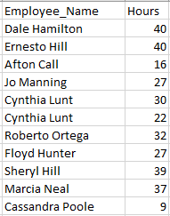
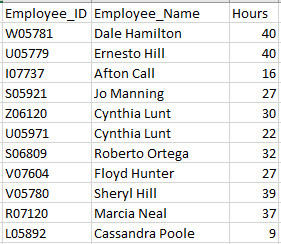
Notice in the image above in the bad example that it is not clear if the employee data is repeated for Cynthia Lunt or if there are two unique employees with the same name. In the good example, it is clear that there are two individuals with the name Cynthia Lunt because they each have a unique Employee_ID.
It is important to realize that a field, like a person’s name, might appear to be unique at first blush, but might not necessarily be unique. Other examples of data that appears unique but often turns out not to be, include Social Security numbers, phone numbers, email addresses, etc. Governments and companies can recycle the data after a period of time. Thus, the best unique identifiers are not reused and are generally assigned by a company.
Unique identifiers may not be contained in a single cell. Sometimes they span two or more columns. For example, the image below shows an employee number, employee name and a location number.
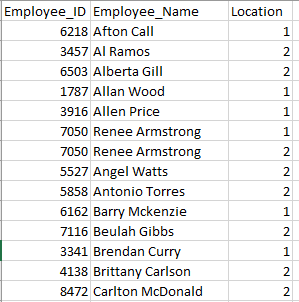
One would expect the Employee_ID to be a unique identifier. However, examining the data shows that Renee Armstrong works at two different locations and the same identification number is used for each location. The unique identifier in this case is the combination of the Employee_ID and Location. That is, the employee number is repeated for each location, but the combination of the employee number and the location number uniquely identifies each row. In this case, the concatenation (or combination) of the employee number and the location number creates a unique identifier.
Similar to the previous example, unique identifiers may be embedded with other information and need to be extracted to be useful. On the next page is an image showing the Employee_ID and Employee_Name.
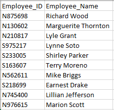
In this image, the Employee_ID field is a combination of several important attributes about the employee. In particular, it indicates if they work at the north or south plant (i.e., the N or S), the employee identification (the next four numbers) and the year they were hired (the last two numbers). So, from this code, we learn that Richard Wood worked at the north plant, has an employee identification of 8756 and was hired in 1998. Depending on the context, you may need to extract one of these three elements from the Employee_ID field to perform your analyses.
Joining (merging) data
Most data stored by companies is stored in databases that use different tables to hold different values, such that each table is about a different “entity” (i.e., thing the company is interested in storing data about). For example, a company might have separate tables dedicated to its customers, sales, inventory, employees, etc. When you want to analyze data that is contained in different tables, the data must be joined correctly.
There are five main types of joins that we will cover: inner join, left join, right join, full outer join and cross join. To illustrate these types of joins, we will use the following simple data showing customers in one table and orders in a second table.
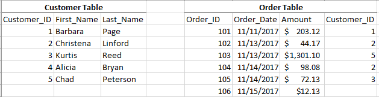
The inner join (sometimes just called a join) combines data in two tables that matches one or more identified attribute. Importantly, an inner join will not pull the data from the tables if there is no match of the identified attribute. For example, when using an inner join to combine the customer and order tables, the match is based on the Customer_ID. The resulting table created from that inner join would appear as follows:
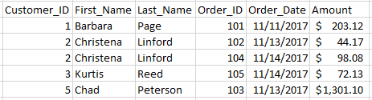
Note that in this inner join, the information for Alicia Bryan is not included because Alicia did not make an order. The data for order 106 also is not included because it was not linked to a customer. Finally, Christena Linford’s name is listed twice because she made two orders.
The left join combines all data from the table listed on the left and only data that matches the identified attributes from the right table. In this case, if we left join the customer table with the order table (i.e., the customer table is on the left), it would return the following:
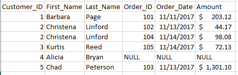
Note that Alicia Bryan is listed in this join because she is in the customer table (or left table), but the values for Order_ID, Order_Date and Amount for Alicia are null values (meaning empty) because there is no match in the customer order table. Also, Christena Linford is listed twice because there were two orders placed by Christena.
The right join functions similar to the left join, except it keeps all data in the right table and only merges matching data from the left table. A left join and right join will produce the exact same results if you switch which tables are listed on the left or right. Based on our tables, if we right join the order table with the customer table (i.e., the order table is on the right), then it would return the following:
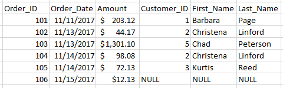
Note that there is no information about Alicia Bryan from the customer table (or left table) because she did not have an order in the order table (right table). Also, order 106 has null values for the Customer_ID, First_Name and Last_Name because no customer identity was specified in the order table to match to the customer table.
A full outer join returns all values from both tables when they match on a specified dimension, and then returns all values that do not match on that dimension with a null value for the non-matching fields. For example, if we full join the customer and order tables, this is the result:
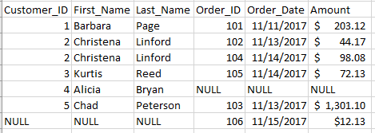
Note that Alicia Bryan’s order appears with null values for the Order_ID information because she has not placed an order, and order 106 shows null information for the customer information because order 106 does not have a customer specified.
A cross join (or Cartesian product) does not use any variable to match, rather it pairs every single instance in one table with every other instance of the other table. A cross join of the customer and order tables is shown on the next page.
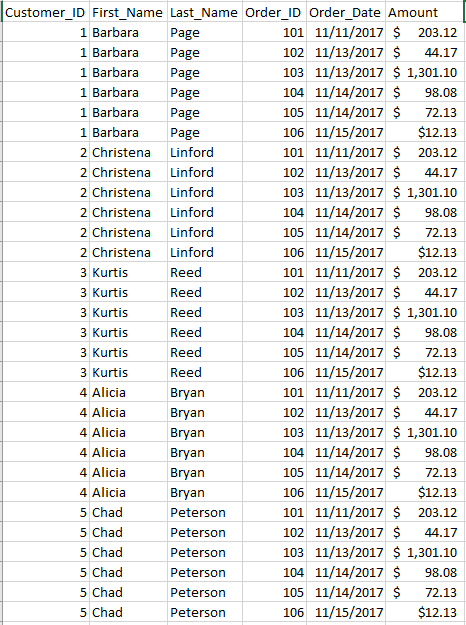
This cross join has little meaning and use in this setting. However, sometimes these joins are useful. For example, if you want to join a list of stores with products to list all possible products that could be sold at any store (and not just a list of which products have been sold at a store), then a cross join would be appropriate.
When performing ETL procedures, it is important to determine which type of join is appropriate. From the examples above, you cannot tell which customers do not have orders if you use an inner join since those customers are dropped from the data set. You would need to use a left or right or full outer join, and then filter out responses that did not have an Order_ID.
Another important consideration in joining data is aggregation. Aggregation is the level at which the data is summarized. It can be at a low level (no aggregation is used) or at a high level (data is aggregated into a single number). Consider the transactions on the next page that list data completely disaggregated.
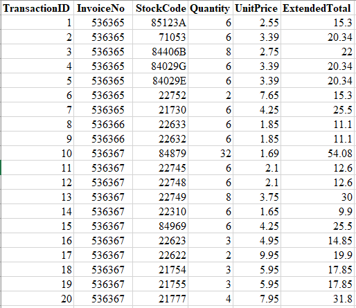
This could be aggregated by InvoiceNo to appear as more highly aggregated data, as follows:
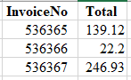
This data also could be completely aggregated to show total sales revenue of $408.25.
When aggregating data from two separate data sources, you want to make sure they are aggregated at the same level before joining the data. If you do not, you may introduce errors into the data. As an example, if you received the disaggregated transaction data and the aggregated invoice data above as separate tables and then merged them, you would get an erroneous answer if you summed all of the totals to get the total per invoice because the Total column shows the value already aggregated at the invoice level.
Common messy data problems
There are many ways that data can be messy. As such, we cannot describe all of the messy data problems in this case. However, there are several categories of common messy data problems that we cover to highlight things one should consider and look for when performing ETL procedures.
Data formats: Data can be formatted in many ways. A format specifies how the data should be treated. Common formats include treating data as a number, text, percent, scientific notation, etc. It is important to understand all of the different formats used in data and what they mean. For example, the number 32.14 means something very different if it is formatted as a percentage, so it means 32.14% versus being formatted as a number representing a percent (3,214.00%). Similarly, different data formats often don’t “speak with each other.” If a unique identifier of 1731 is listed as a number in one data set but the identical number 1731 is listed as a text string in another data set, the tables will not merge correctly until the formats are the same. Each program processes formats differently, so making sure you understand how your program deals with formats is important.
Dates: Dates can be written in many different ways. When working with data from international sources (e.g., customers around the world or business units in different countries), it is very likely that dates will be written differently, even within a single company’s data. For example, May 19, 2001, 19 May 2001, 5/19/2001, 19/5/2001, 5-19-01 and 19-5-01 are just a few of the ways to represent the same date. Understanding the format of the dates is important, especially when merging data sets. Furthermore, it is important to realize that many programs display the date in a certain format, but it is actually stored differently.
For example, May 19, 2001, actually is stored in Microsoft Excel as the number 40682, which is the number of days from January 0, 1900. Excel, and other programs, stores dates in this fashion to enable computations of date fields.
Duplicate and redundant data: Data can be duplicated, especially when combining data sets. It is important to look for and understand if data is duplicated. This usually can be checked by examining a unique identifier, or checking to see if all data in a row is an exact duplicate of another line. Redundant data refers to including data, likely aggregated at a different level, that is already contained in the data. For example, when merging data, if there is a total row, you might remove it before merging, since the total is just a summary of the rest of the data.
Units of measurement: There are many different ways to measure the same thing considering different units of measurement.
For example, an NBA basketball court is 94 feet by 50 feet, which can also be listed as 28.7 meters by 15.2 meters or 1,128 inches by 600 inches, etc. When raw numbers are included in a data set, it is critical to realize the unit of measurement and if that is the same unit of measurement for storing information across all data sets.
As another example, companies often abbreviate numbers in a financial statement so that numbers are listed in thousands, millions or even billions. In this case, it is important to know if 129 represents 129, 129,000, 129,000,000, etc. Making sure all things are measured in the same units will help keep data clean.
Amounts might also be listed in different currencies (i.e., US dollars, European euros).
International differences: Different countries store data in different ways. As previously mentioned, dates are often recorded differently in the United States than elsewhere in the world and units of measurement also frequently differ.
In addition, countries use decimal marks differently, meaning in the US, the “.” is used to specify the fractional portion of a number (e.g., 12.32), whereas in many other countries, a comma is used (e.g., 12,32). Similar differences can be used for marking differences between hundreds, thousands, etc.
Creating a repeatable ETL process
As mentioned in the beginning of this case, a significant amount of time and resources are invested in ETL procedures, especially for audits. Therefore, every effort should be made to try to create repeatable processes that would minimize this work and provide the most value. Below are some considerations to best enable this.
Data format: According to the AICPA, “the challenge that management and auditors face is obtaining accurate data in a usable format following a repeatable process.”2 To help address this issue, the AICPA “has developed voluntary, uniform audit data standards that identify the key information needed for audits and provide a common framework covering: (1) data file definitions and technical specifications, (2) data field definitions and technical specifications, and (3) supplemental questions and data validation routines to help auditors better understand the data and assess its completeness and integrity.”3 In audits where management and auditors work together to follow these standards, great efficiencies can be gained.
Data scope: While the scope of the data extracted is primarily focused only on what is needed for the current analysis, it can be helpful to look forward to future data analytics needs as well when designing a repeatable data process. For example, you might know that the company is planning to launch sublocations in the next few months and has added this field to its data tables, but it has not yet populated the data. In this scenario, the field could be added for extraction now, even though no data will be available at this time so that the ETL process is best enabled to be repeatable in the following fiscal period with no modifications. Alternatively, maybe the company has already launched these sublocations, but the relevant financial information has already been deemed as not material to warrant data analytics procedures in the current period, and instead would most likely be material in a future period. It might also make sense to go ahead and include that data field now as well. In considering the scope, though, you always need to strike a balance between the volume of data requested and the amount of processing time required.
Documentation: It is important to document the ETL process so that it can be used as a reference to repeat the process in the future, as well as evidence, if it is needed. In an audit, the ETL process is generally documented as a memo and retained in the working papers to support the conclusion that the process worked as intended and any inputs and outputs are complete and accurate. Documentation can include, but is not limited to: the name of data systems; names and details of data tables; financial dates of data; extraction dates; the extraction approach and tools used, including data filters; the number of files; steps to transform the data, including business rules; workflows; mapping; scripts and customizations for creating data fields; steps to validate the data, including reconciliations; who performed various procedures; relevant screenshots; and considerations for the future.
Automation: When an ETL process has been established, using an automation tool, such as Alteryx, to perform the ETL procedures instead of a professional can save time, reduce errors, provide visual workflow overviews, standardize documentation and, most importantly, allow for an easily repeatable process.
Required
Answer the following questions.
Explain whether and how two spaces can or cannot be as a delimiter in a data file.
Which of the following delimiters is recommended by the AICPA in its Audit Data Standards as a preferred delimiter for files provided to auditors? Explain why.
Comma
Tab
Space
Colon
Pipe
Which of the following is true?
Microsoft Excel documents are the least common proprietary file type.
Proprietary file types often cannot be opened in other software and the amount of records they hold can be restricted.
Delimiter-separated value file types do not have a greater data capacity than proprietary file types.
What is the concern about using commas in a delimiter-separated file type and what can be used to remedy the concern?
For each of the following, review the data in the images below and identify the (1) delimiter and (2) the qualifier (if applicable).
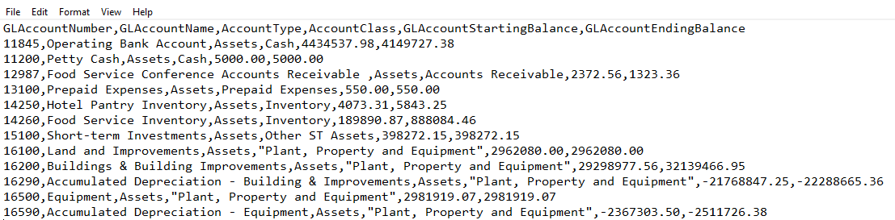
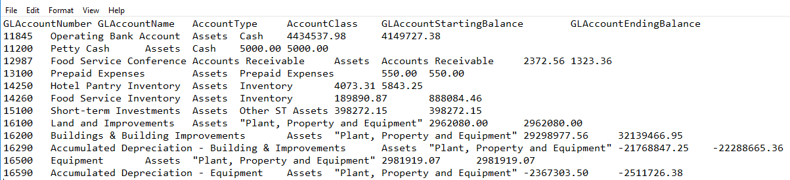
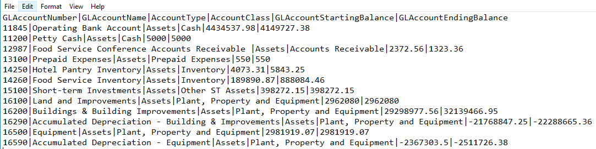
Is an asset ID a good data field to use as a unique identifier in a data set needed to analyze depreciation? Why or why not?
Below are excerpts from two data tables: a customer table on the left and a sales transaction table on the right. Invoices are billed to customers on a bimonthly basis.
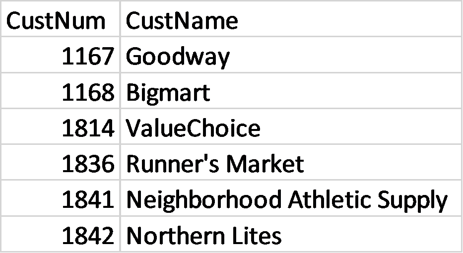
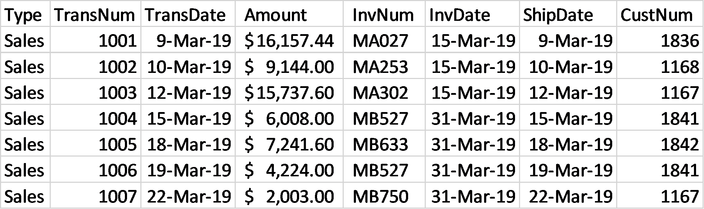
Answer the following questions.
Identify the join that would best show all transactions with customer details and explain how this join works and the unique identifier you would use for the join.
Identify a join that would show all customer and transaction details and explain how this identifier works and the unique identifier you would use for the join.
Assume two companies just merged and you are trying to combine the data for each company to analyze payroll for all employees. Employees at Company A submit their hours each week and are paid biweekly. Employees at Company B submit their hours for a month and are paid monthly. Describe how the data is likely stored by the two companies and how you would manipulate the data before it can be merged together.
Assume a company has two divisions that operate in close proximity. The majority of employees only work in one division; however, there are some employees who work in both divisions. Each division keeps a separate data table of its employees. Which join type would you use, and upon which fields would you set your join, if you want to know which employees work at both divisions?
Describe how you would transform the following three dates so that all data has the same format. State any assumptions you make and how confident you are that your assumption is correct.
07/13/2005
98/03/17
04-07-11
List three differences in units of measurement within data files that you might see in an accounting context.
Research online which formats Excel uses for numbers. Excel number formats can be found in the home tab on the ribbon and by expanding the options in the Number section. The different formats include: General, Number, Currency, Accounting, Date, Time, Percentage, Fraction, Scientific, Text, Special and Custom. Define each format.
Footnotes
The exception to the pipe delimiter is when you work with Chinese or Japanese data, in which case a tab-delimited format is recommended.
↩“Audit Data Standards,” American Institute of Certified Public Accountants website, https://www.aicpa.org/interestareas/frc/assuranceadvisoryservices/auditdatastandards.html, accessed May 10, 2019.
↩Ibid.
↩